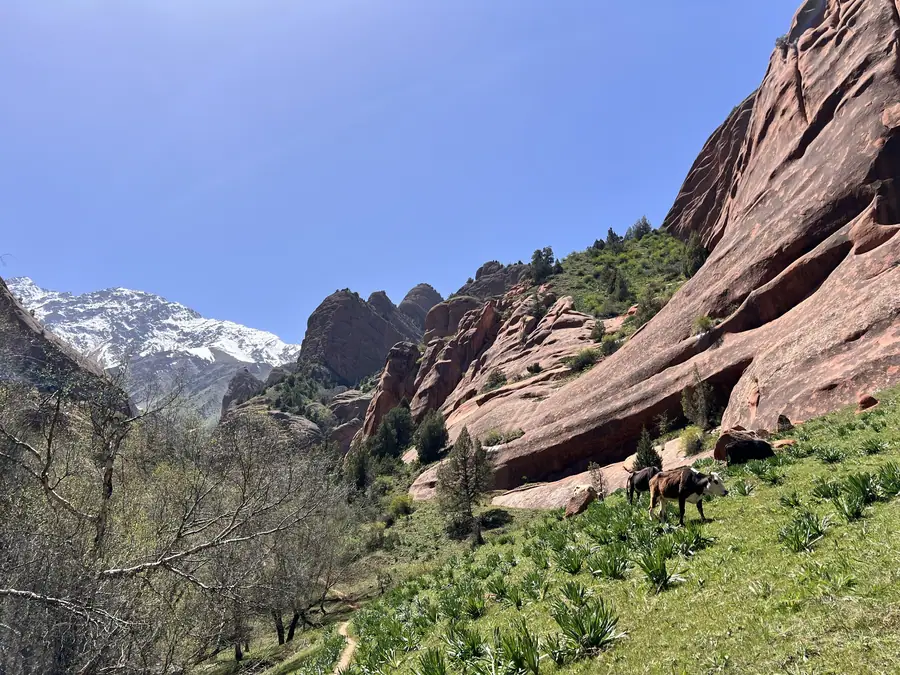
День 1
Ош: древний город у горы
Встречаем в Оше, одном из древнейших городов Центральной Азии. Вечером — базар, плов и знакомство с группой. Завтра начинается дорога в горы.
- Ош
- Знакомство с группой
- Ужин
НочёвкаОш, гостиница
Семь дней по Алайской долине к подножию пика Ленина.
От древней Оши через перевал в Алайскую долину: ледники Заалайского хребта, юрты и ночёвки у подножия пика Ленина.
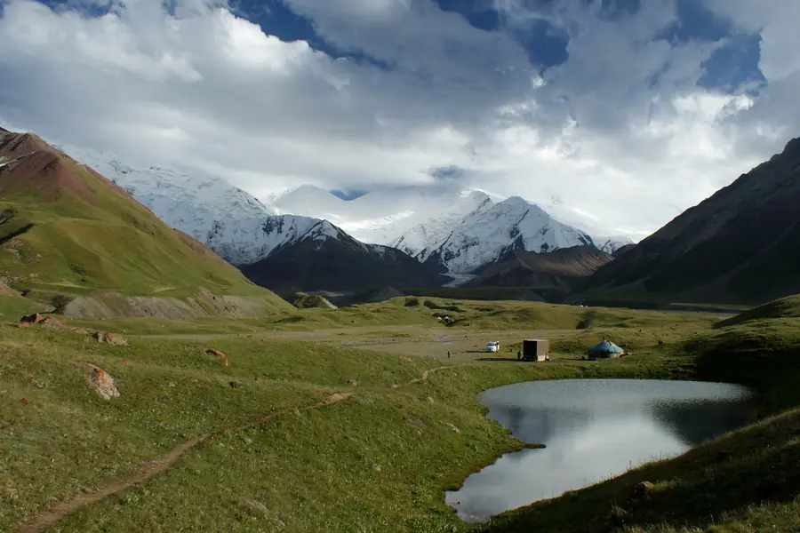
Ледники Заалайского хребта и вид, ради которого едут на юг Кыргызстана.
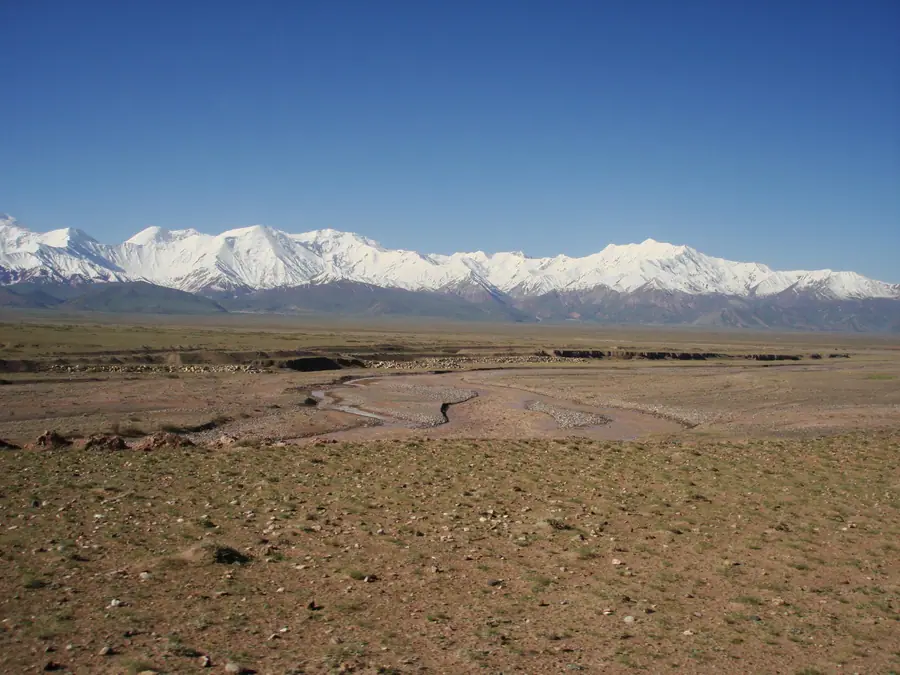
Огромная долина между хребтами с белыми вершинами на горизонте.
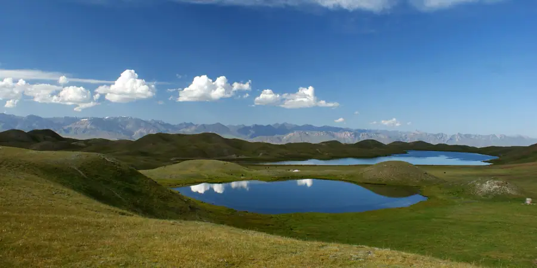
Зелёные склоны и маленькие озёра у базового лагеря.
Мы не привязываем день к минутам: в горах ритм задают погода и дорога. Зато точно знаем, где вы окажетесь и что увидите.

День 1
Встречаем в Оше, одном из древнейших городов Центральной Азии. Вечером — базар, плов и знакомство с группой. Завтра начинается дорога в горы.
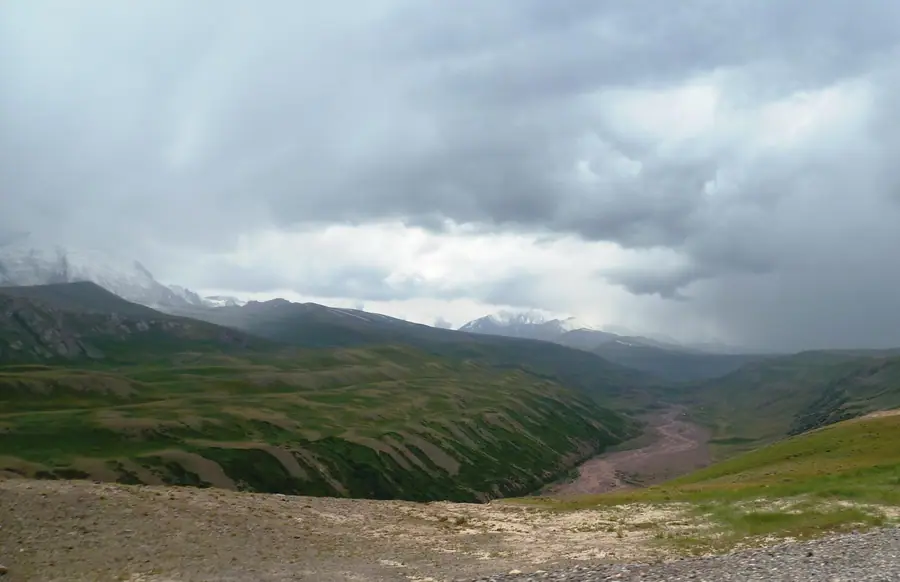
День 2
Поднимаемся через высокий перевал, и перед нами открывается Алайская долина. Ночёвка в Сары-Таше, на перекрёстке дорог.
День 3
Едем по долине к базовому лагерю: ледники становятся всё ближе, а дорога всё тише. Вечером — юрта и чай под вершинами.
Район находится в приграничной зоне: разрешения оформляются заранее. Высота около 3600 м.
День 4
Прогулки по склонам и вдоль озёр, ленивый день для привыкания к высоте. Можно подняться выше или остаться у юрты.
Нагрузка по желанию, зависит от самочувствия.
День 5
Спускаемся в жайлоо Алая: красные скалы, зелёные склоны и дома кочевников. Обед у семьи и вечер среди табунов.
День 6
Возвращаемся в Ош тем же красивым маршрутом: перевал и последние кадры. Прощальный ужин в городе.
День 7
Завтрак и трансфер в аэропорт. Мы подскажем, как лучше спланировать вылет.
Важно честно понимать, что вас ждёт: дороги, высота, условия ночёвок и погода.
Переезды
Физическая нагрузка
Высота
Комфорт
Вам подойдёт, если
Лучше выбрать другое, если
Транспорт
Два внедорожника. Перевалы и горные дороги.
Группа
От 4 до 8 путешественников.
Ночёвки
Гостиница в Оше, гостевые дома и юрты в горах.
Разрешения
Приграничная зона: разрешения оформляем заранее.
Точный состав услуг и стоимость мы согласуем отдельно: оставьте заявку, и мы вернёмся с программой и расчётом под вашу группу и даты.
Получить расчёт →Нет. Мы не поднимаемся на пик Ленина: едем к его подножию на внедорожниках и гуляем у базового лагеря.
Маршрут построен с постепенным набором высоты и днём для привыкания. Если у вас есть вопросы по здоровью, обсудите их с врачом перед поездкой.
Стоимость зависит от состава группы, дат и выбранных услуг, поэтому мы не публикуем одну цифру «для всех». Оставьте заявку, и мы пришлём программу с расчётом.
Программа может меняться из-за погоды, состояния дорог и безопасности участников. В горах это нормально: мы заранее обсуждаем запасные варианты.
Да. Мы можем собрать группу под вас: друзья, семья или коллеги. Оставьте заявку и напишите в пожеланиях, сколько вас.
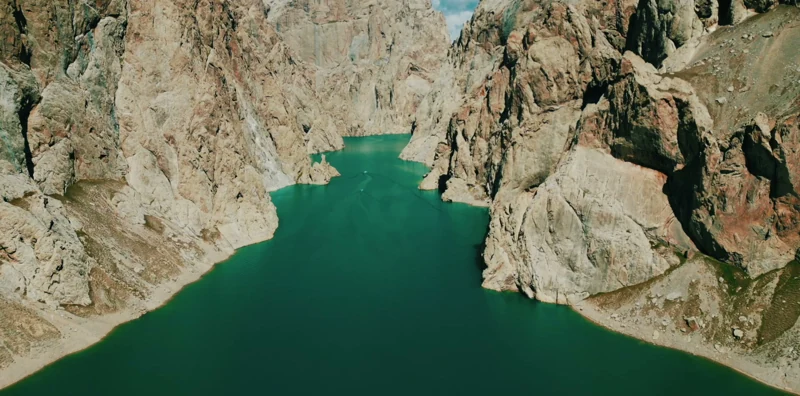
Восемь дней, три озера, два внедорожника
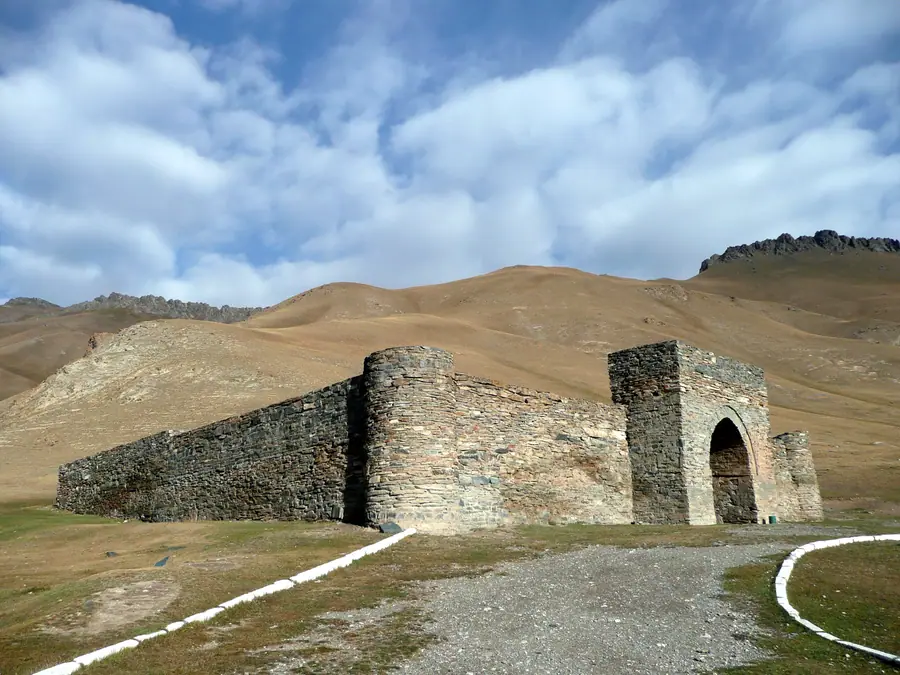
Караван-сарай, высокогорное озеро и юрты
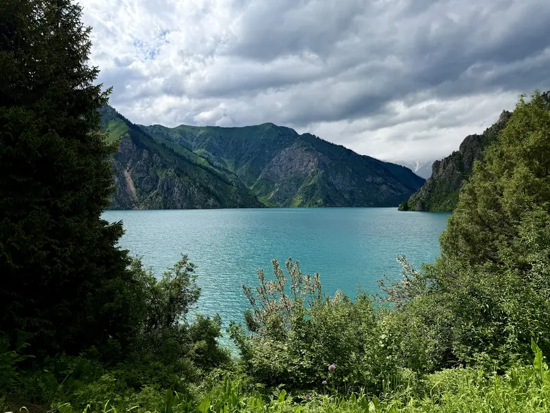
Леса, водопады и самое чистое озеро
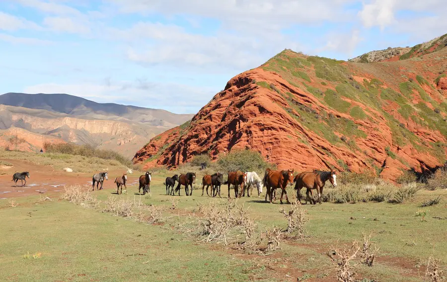
Каньоны без толп и первые цветы
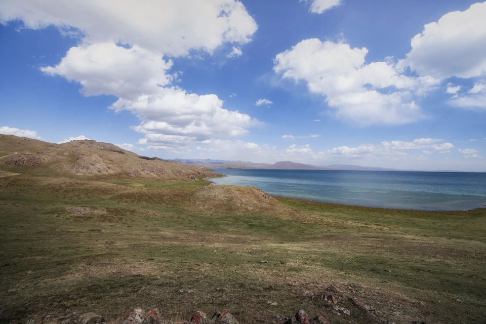
Золотой свет на высокогорных пастбищах
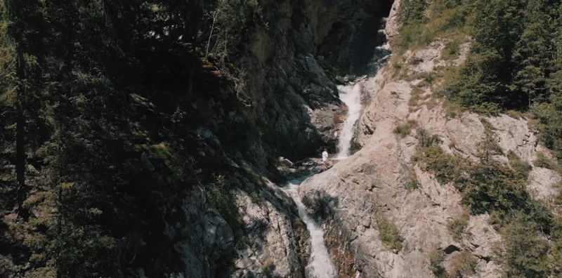
Снег, горячая вода и охотники с беркутом
Оставьте контакты — вернёмся с программой и расчётом под вашу группу и даты. Если пока сомневаетесь, тоже напишите: расскажем, подходит ли вам такой формат.
Что будет дальше
Мы свяжемся с вами, ответим на вопросы и пришлём программу с расчётом. Состав услуг и стоимость согласовываем отдельно.
Заявка
Оставьте контакты — вернёмся с программой и расчётом под вашу группу и даты.